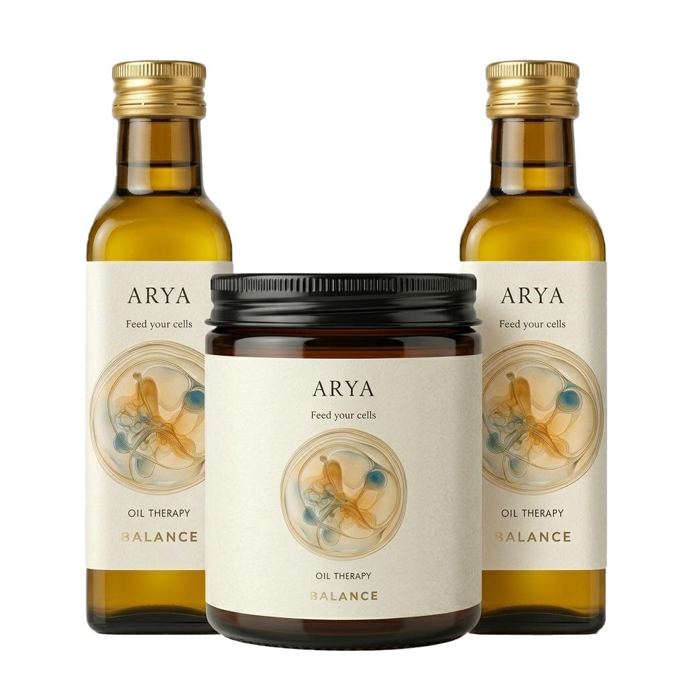

Single-origin Nigella sativa, cold-pressed in small batches and bottled whole. Nothing added, nothing removed.
Discover the oil
Black cumin seed oil. One pressing. Whole.
Shop the oil — €38A single seed, pressed cold and unrefined. Read as a specimen — measured, documented, exact.